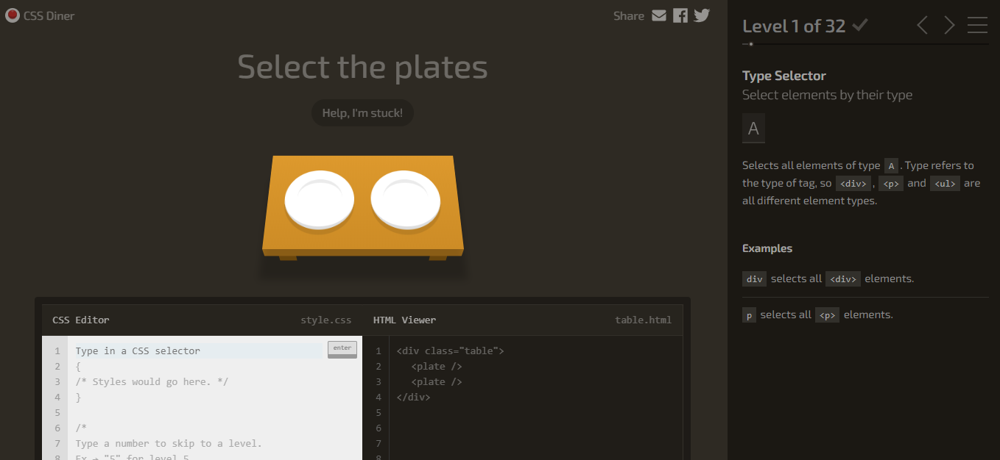

RECURSOS
Ponemos a disposicion los siguientes recursos para facilitar el aprendizaje correspondiente a selectores CSS.
Video interactivo estilos internos y Externos CSS:
https://www.youtube.com/watch?v=MzEBxbFYEys&feature=youtu.be
Juego para aprender selectores CSS
